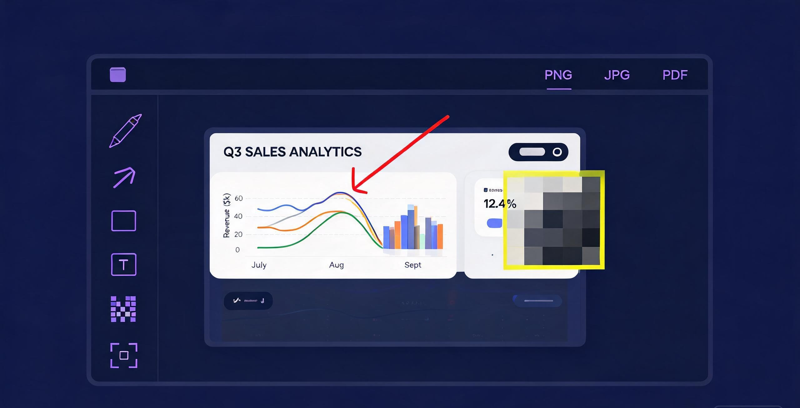

Full-page, region and visible-area screenshots, a precise annotation studio, and GIF/MP4 screen recording — in one lightweight toolkit for your browser and your desktop.
No account required · Everything is processed locally
From a quick visible-area snap to a pixel-perfect full-page capture, from arrows to mosaics, from a 5-second GIF to a narrated MP4 — SnapCompass covers the whole loop.
Scroll-stitched captures of entire pages — even long documentation and infinite-scroll pages. Sticky headers are automatically de-duplicated.
FireShot-grade stitchingDrag to select exactly the pixels you need, or grab the viewport in one keystroke. Device-pixel-ratio aware for crisp Retina results.
Pixel-precisePen, arrows, rectangles, ellipses, text, mosaic blur and crop — with colors, stroke widths, undo and instant clipboard copy.
Awesome-grade markupRecord a tab, a window or the whole desktop. Export as MP4 for sharing, or as a compact looping GIF for docs and issue reports.
GIF + MP4Save annotated captures in the format your workflow needs — including single-page PDFs, FireShot-style, with one click.
1-click exportNo uploads, no accounts, no tracking pixels. Every capture is stitched, annotated and encoded on your own machine.
Local-firstClick the toolbar button or press a shortcut. Choose visible area, full page, a dragged region — or hit record for the screen.
The capture opens instantly in the editor. Drop arrows, text and mosaic blur exactly where they belong. Undo is always one keystroke away.
Copy to clipboard, or save as PNG, JPG, PDF, GIF or MP4. Files land straight in your Downloads folder — nothing touches a server.
The same capture engine and the same annotation studio, delivered where you actually work.
Manifest V3, keyboard shortcuts, right-click capture menu and a popup recorder. Works on Chrome, Edge, Brave and every Chromium browser.
Get SnapCompass — FreeElectron-powered desktop capture with a global hotkey (Ctrl+Shift+X), region selection overlay, tray icon and native .exe installer.
Download .exeYes — free and MIT-licensed open source. Every feature (full-page capture, annotation, GIF/MP4 recording, PDF export) is included with no paywall and no watermarks.
Nowhere but your disk. Capturing, stitching, annotation rendering and GIF/MP4 encoding all happen locally in your browser or the desktop app. There is no account system and no upload step.
Clone or download the repository, open chrome://extensions, enable Developer mode, and choose "Load unpacked" pointing at the extension/ folder. A Chrome Web Store listing is planned.
The extension runs on any Manifest-V3 Chromium browser (Chrome, Edge, Brave, Arc…). The desktop app targets Windows 10/11 as a native .exe; the codebase is Electron, so macOS and Linux builds are possible from source.
GIFs are capped at 60 seconds and 640 px width to keep file sizes sane for docs and issue trackers. For longer or higher-resolution captures, record in MP4 instead.
Stop juggling five tools for screenshots, markups and recordings. SnapCompass keeps the whole loop in one place — free, local and open source.